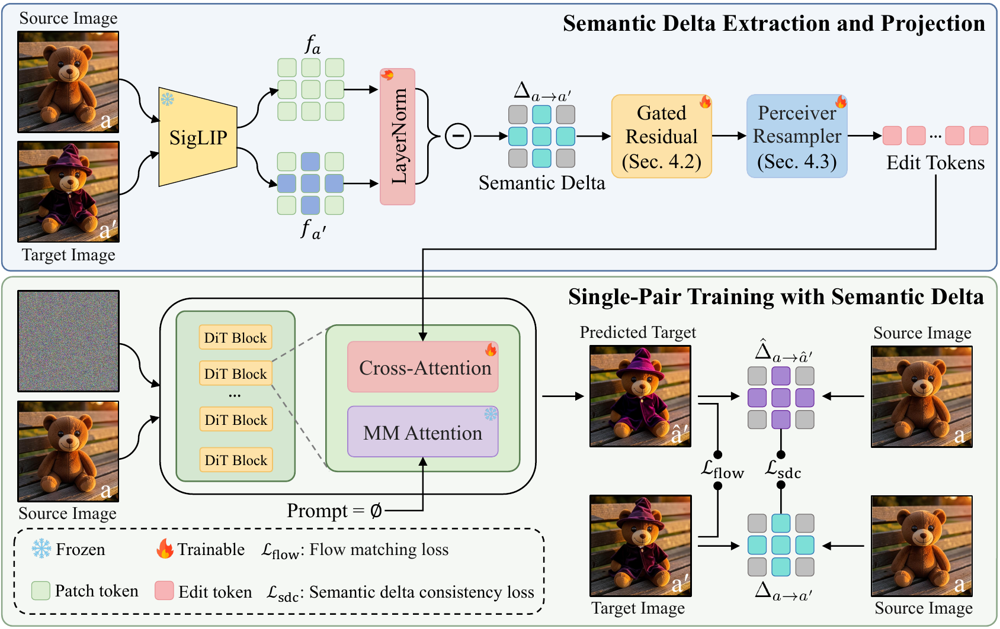
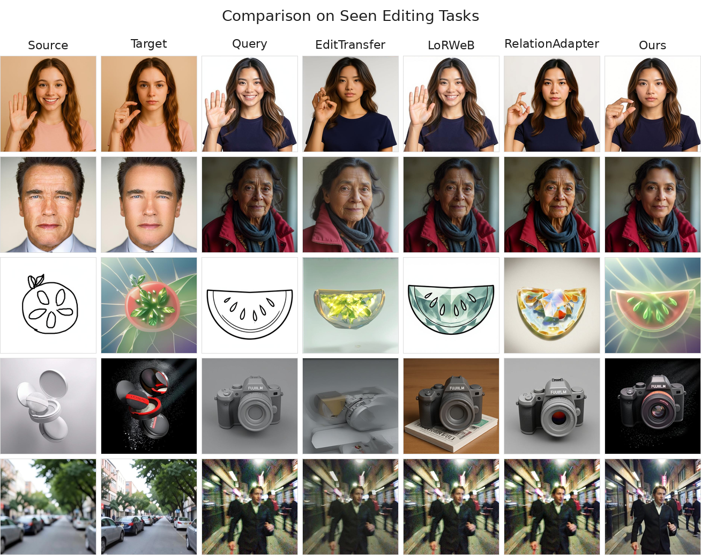
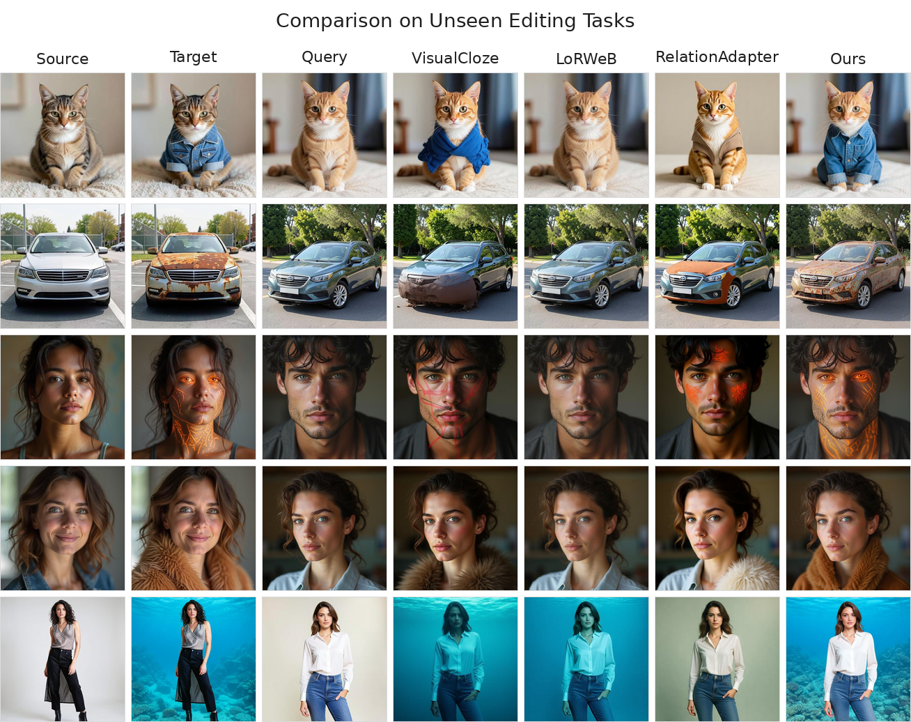
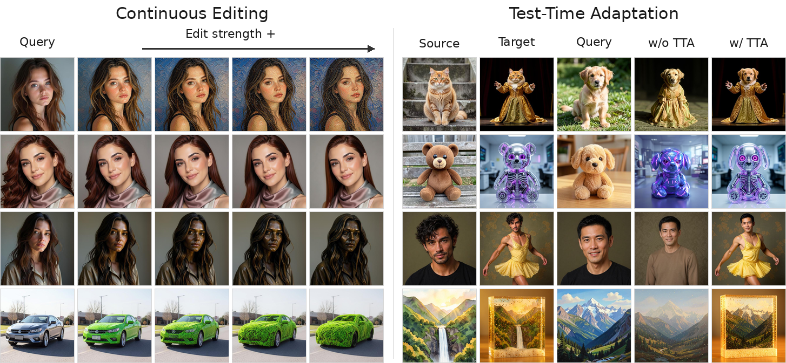

Exemplar-based image editing applies a transformation defined by a source-target image pair to a new query image. Existing methods rely on a pair-of-pairs supervision paradigm, requiring two image pairs sharing the same edit semantics to learn the target transformation. This constraint makes training data difficult to curate at scale and limits generalization across diverse edit types. We propose Delta-Adapter, a method that learns transferable editing semantics under single-pair supervision, requiring no textual guidance. Rather than directly exposing the exemplar pair to the model, we leverage a pre-trained vision encoder to extract a semantic delta that encodes the visual transformation between the two images. This semantic delta is injected into a pre-trained image editing model via a Perceiver-based adapter. Since the target image is never directly visible to the model, it can serve as the prediction target, enabling single-pair supervision without requiring additional exemplar pairs. This formulation allows us to leverage existing large-scale editing datasets for training. To further promote faithful transformation transfer, we introduce a semantic delta consistency loss that aligns the semantic change of the generated output with the ground-truth semantic delta extracted from the exemplar pair. Extensive experiments demonstrate that Delta-Adapter consistently improves both editing accuracy and content consistency over four strong baselines on seen editing tasks, while also generalizing more effectively to unseen editing tasks. Code will be made publicly available.

Delta-Adapter learns exemplar-based image editing from a single source-target pair without textual guidance. Instead of conditioning the model on the full edited exemplar image, we extract a normalized semantic delta from dense SigLIP features, refine it with a gated residual projection, and convert it into edit tokens through a Perceiver resampler.
These edit tokens are injected into a frozen DiT-based editing backbone through a decoupled cross-attention branch. Training uses a flow-matching reconstruction objective together with a semantic delta consistency loss, encouraging the generated output to follow the exemplar transformation while preserving the query image content.



@misc{chen2026deltaadapter,
title={Delta-Adapter: Scalable Exemplar-Based Image Editing with Single-Pair Supervision},
author={Jiacheng Chen and Songze Li and Han Fu and Baoquan Zhao and Wei Liu and Yanyan Liang and Li Qing and Xudong Mao},
year={2026}
}